தொழிற்சாலை அலுவலகம் கன்சோலை எப்படிப் பயன்படுத்துவது, வேலை வேலையாக: வழங்குநர்கள், கோரிக்கைகளைத் தீர்மானித்தல், மாதாந்தப் பில்கள், தொழிற்சாலைப் பதிவுகள், செயலியின் உள்ளடக்கம், கட்டமைப்பு மற்றும் பயனர்கள். படிப்படியாக, திரைப்பிடிப்புகளுடனும் செய்து காட்டிய உதாரணங்களுடனும்.
யாருக்கு: தொழிற்சாலை அலுவலகம்: எழுதுவினைஞர்கள், மேலாளர்கள், தொகுப்பாளர்கள் மற்றும் தொழிற்சாலை நிர்வாகி.
திரைப்பிடிப்புகள்: Galaboda Tea Factory இன் மாதிரித் தரவுடன் உண்மையான கன்சோலிலிருந்து எடுக்கப்பட்டவை. பெயர்களும் எண்களும் உதாரணங்கள் மட்டுமே.
திகதி: 28 ஒக்டோபர் 2026. ஒவ்வொரு திரைக்கும் பின்னால் உள்ள விதிகள் "நிர்வாகக் கன்சோல்: இது எவ்வாறு செயல்படுகிறது" என்ற வழிகாட்டியில் உள்ளன.
உள்ளடக்கம்
உள்நுழைதலும் வழி கண்டுபிடித்தலும்
யார் என்ன செய்கிறார்கள்
முகப்புப் பலகை
வழங்குநர்கள்
கடன் கோரிக்கைகளைத் தீர்மானித்தல்
கவுண்டரில் செய்யப்பட்ட கோரிக்கையைப் பதிவுசெய்தல்
தேயிலைப் பொதிகள்
மாற்றக் கோரிக்கைகள்
விசாரணைகள்
பில்கள்
கொழுந்து வரவு
விலை மற்றும் மாத நிறைவு: கணக்கிடப்படும் பில்கள்
விலை மற்றும் மாத நிறைவு: இறக்குமதி செய்யப்படும் பில்கள்
செய்திகள், பேனர்கள் மற்றும் நிலையான பக்கங்கள்
அறிவிப்புகள்
கட்டமைப்பு
பயனர்கள் மற்றும் பதவிகள்
அறிக்கைகள், தணிக்கைப் பதிவு மற்றும் தரவு நிலை
கன்சோல் மறுக்கும்போது
1. உள்நுழைதலும் வழி கண்டுபிடித்தலும்
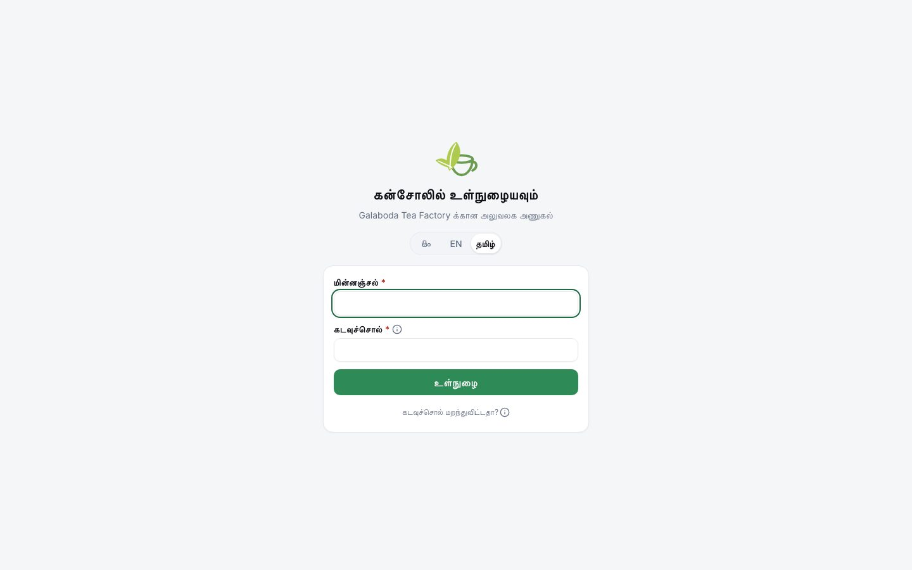
படம் 1.1 உள்நுழைவு. தொழிற்சாலையின் பெயரும் மொழிப் பொத்தான்களும் மேலே உள்ளன.
உங்கள் தொழிற்சாலையின் கன்சோல் முகவரியை இணைய உலாவியில் திறக்கவும் (அலுவலகக் கணினியில் Chrome அல்லது Edge).
மொழியைத் தேர்ந்தெடுக்கவும்: சிங்களம், ஆங்கிலம் அல்லது தமிழ்.
உங்கள் அலுவலக மின்னஞ்சலையும் கடவுச்சொல்லையும் தட்டச்சு செய்து உள்நுழை என்பதைக் கிளிக் செய்யவும். புதிய பயனருக்கு நிர்வாகி முதல் கடவுச்சொல்லைத் தருவார். முதல் முறை உள்நுழையும்போது அதை மாற்ற வேண்டும்.
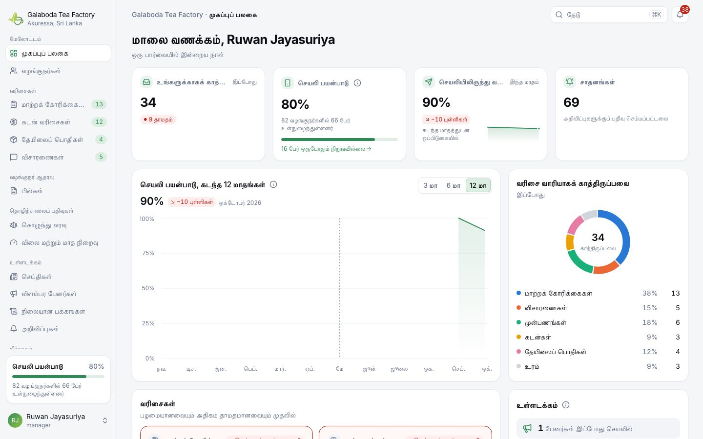
படம் 1.2 உள்நுழைந்த பின் கன்சோல்: இடப்பக்கம் பக்கப்பட்டி, மேலே வலப்பக்கம் தேடலும் அறிவிப்பு மணியும்.
திரையின் பகுதி
அது எதற்கு
பக்கப்பட்டி
உங்கள் பதவி திறக்கக்கூடிய ஒவ்வொரு பகுதியும், குழுக்களாக: மேலோட்டம், வரிசைகள் (காத்திருப்பவற்றின் எண்ணிக்கையுடன்), வழங்குநர் ஆதரவு, தொழிற்சாலைப் பதிவுகள், உள்ளடக்கம், நிர்வாகம்
தேடல் (Ctrl+K)
இலக்கம் அல்லது பெயரால் வழங்குநரைக் கண்டுபிடிக்க, அல்லது ஒரு பக்கத்தின் பெயரால் அங்கு செல்ல
மணி
உங்களுக்காகக் காத்திருப்பவை, பழையவை முதலில், மற்றும் வழங்குநர்கள் செயலியில் சற்று முன் செய்தவை
உங்கள் பெயர் (கீழே இடப்பக்கம்)
உங்கள் சுயவிவரம், தோற்றம், எழுத்தின் அளவு மற்றும் வெளியேறு
பலர் பயன்படுத்தும் அலுவலகக் கணினியில்
எழுந்து செல்லும்போது எப்போதும் வெளியேறுங்கள். வெளியேறும் முன் கன்சோல் உறுதிப்படுத்தக் கேட்கும், எனவே தவறான ஒரு கிளிக்கால் உங்கள் வேலை இழக்கப்படாது.
2. யார் என்ன செய்கிறார்கள்
பதவி
கன்சோலில் அன்றாட வேலை
எழுதுவினைஞர்
வழங்குநர் பதிவுகள், கொழுந்து வரவு, மாதப் பில்களை இறக்குமதி செய்தல் அல்லது உருவாக்குதல், கவுண்டரில் செய்யப்பட்ட கோரிக்கைகளைப் பதிவுசெய்தல், மாற்றக் கோரிக்கைகள், விசாரணைகளுக்குப் பதில் அளித்தல்
மேலாளர்
முன்பணம், கடன், உரம் மற்றும் தேயிலைப் பொதிகளைத் தீர்மானித்தல்; விலைகள், மாத நிறைவு மற்றும் பில்களை வெளியிடுதல்; சேமிப்பு எடுப்புகளை அங்கீகரித்தல்; அறிக்கைகள்
தொகுப்பாளர்
செய்திகள், விளம்பர பேனர்கள், நிலையான பக்கங்கள் (அடிக்கடி கேட்கப்படும் கேள்விகள், நிபந்தனைகள்), மூன்று மொழிகளிலும்
தொழிற்சாலை நிர்வாகி
கட்டமைப்பு, பயனர்கள் மற்றும் பதவிகள்; தொழிற்சாலையின் எல்லாப் பதிவுகளையும் படிக்கலாம், ஆனால் எதையும் மாற்றுவதில்லை
இருவர் விதி
கோரிக்கையைப் பதிவுசெய்தவர், மாத விலையை உள்ளிட்டவர் அல்லது பில்களை இறக்குமதி செய்தவர் அவற்றை அங்கீகரிக்கவோ வெளியிடவோ முடியாது. அவருக்குக் கன்சோல் அங்கீகரி அல்லது வெளியிடு பொத்தானைக் காட்டுவதில்லை. வேறு ஒருவர் அதைச் செய்ய வேண்டும்.
ஒவ்வொரு அங்கீகாரத்தையும் தொழிற்சாலை அமைப்பிலும் உள்ளிடுங்கள்
கன்சோல் தொழிற்சாலையின் சொந்த அமைப்பில் ஒருபோதும் எழுதுவதில்லை. ஒவ்வொரு அங்கீகாரச் சாளரமும் இதை நினைவூட்டும்: இங்கே அங்கீகரித்த பின், அதையே தொழிற்சாலை அமைப்பிலும் உள்ளிடுங்கள். ஏனெனில் சீட்டை அச்சிடுவதும் பணத்தைச் செலுத்துவதும் அந்த அமைப்புதான்.
3. முகப்புப் பலகை
முகப்புப் பலகை (படம் 1.2) அன்றைய நிலையை ஒரே பார்வையில் காட்டுகிறது:
உங்களுக்காகக் காத்திருப்பவை: வரிசைகளில் உள்ள அனைத்தும் (உதாரணத்தில் 34, அவற்றில் 9 இலக்கு நேரத்தைக் கடந்துவிட்டன).
செயலி பயன்பாடு: மொத்த வழங்குநர்களில் செயலியில் உள்நுழைந்தவர்கள் (82 இல் 66, 80%). கவுண்டரில் உதவ வேண்டிய வழங்குநர்களின் பட்டியலுக்கு "16 பேர் ஒருபோதும் நிறுவவில்லை" என்பதைக் கிளிக் செய்யவும்.
செயலியிலிருந்து வந்த கோரிக்கைகள்: இந்த மாதம் செயலி மூலம் வந்த கோரிக்கைகளின் பங்கு (90%).
சாதனங்கள்: அறிவிப்புகளுக்குப் பதிவு செய்யப்பட்ட தொலைபேசிகள்.
வரிசை வாரியாகக் காத்திருப்பவை மற்றும் வரிசைகள்: ஒவ்வொரு வரிசையும், அதில் உள்ள மிகப் பழைய கோரிக்கையின் வயதுடன். நான்கு நாட்களாகக் காத்திருக்கும் மூன்று கோரிக்கைகளைக் கொண்ட வரிசையை, இன்று காலை வந்த இருபது கோரிக்கைகளுக்கு முன் கவனிக்க வேண்டும்.
உள்ளடக்கம்: கவனிக்கப்படாமல் தவறாக இருப்பவை, உதாரணமாக சிங்கள உரை இல்லாத கட்டுரை அல்லது திகதிகள் கடந்துவிட்ட பேனர்.
4. வழங்குநர்கள்
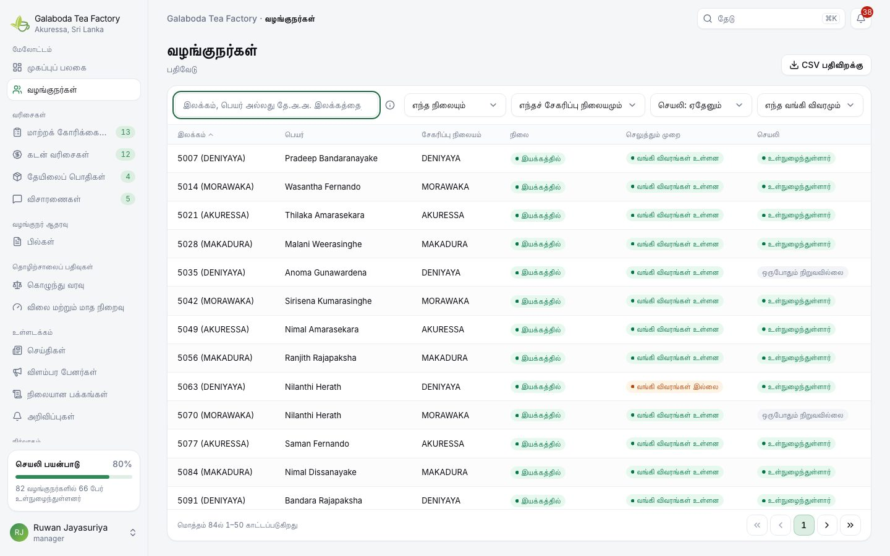
படம் 4.1 வழங்குநர் பட்டியல்: நிலை, சேகரிப்பு நிலையம், செயலி பயன்பாடு மற்றும் வங்கி விவரங்களுக்கான வடிகட்டிகளுடன்.
4.1 வழங்குநரைக் கண்டுபிடித்தல்
வழங்குநர்கள் என்பதைக் கிளிக் செய்யவும், அல்லது எந்தத் திரையிலும் Ctrl+K அழுத்தவும்.
இலக்கம், பெயர் அல்லது தே.அ.அ. இலக்கத்தைத் தட்டச்சு செய்யவும். வடிகட்டிகளைப் பயன்படுத்தவும்: செயலி: ஏதேனும் → ஒருபோதும் நிறுவவில்லை என்பது செயலியை நிறுவாத வழங்குநர்களைக் காட்டும்.
வழங்குநரைத் திறக்க அவரது வரிசையைக் கிளிக் செய்யவும்.
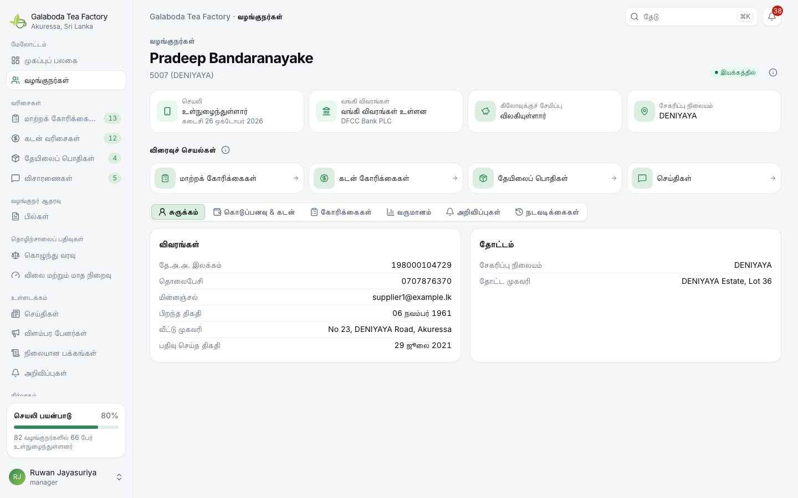
படம் 4.2 ஒரு வழங்குநர்: மேலே செயலி, வங்கி, சேமிப்பு மற்றும் சேகரிப்பு நிலையம், பின்னர் விரைவுச் செயல்கள், அதன் கீழ் தாவல்கள்.
தாவல்
அது காட்டுவது
சுருக்கம்
சுயவிவரம் (தே.அ.அ. இலக்கம், தொலைபேசி, முகவரிகள்) மற்றும் தோட்டம்
கொடுப்பனவு & கடன்
அவருக்குப் பணம் செலுத்தப்படும் முறை, வங்கி (மறைக்கப்பட்டது), கிலோவுக்குச் சேமிப்பு, கடன் நிலுவைகள் மற்றும் சேமிப்புப் புத்தகம் (படம் 4.3)
கோரிக்கைகள்
ஒவ்வொரு முன்பணம், கடன், உரம் மற்றும் தேயிலைப் பொதிக் கோரிக்கையும் அதன் நிலையுடன் (படம் 4.4)
வருமானம்
வழங்குநர் செயலியில் பார்க்கும் அதே வரைபடம், பட்டியல் மற்றும் கழிவுகள் காட்சிகள்
அறிவிப்புகள்
இந்த வழங்குநருக்கு எந்த அறிவிப்புகள் சென்றடைகின்றன, ஒன்று சென்றடையாவிட்டால் ஏன் (தொலைபேசி இல்லை, நிறுத்தப்பட்டுள்ளது, அனுப்பப்படவில்லை)
நடவடிக்கைகள்
வழங்குநர் செயலியில் செய்தவை
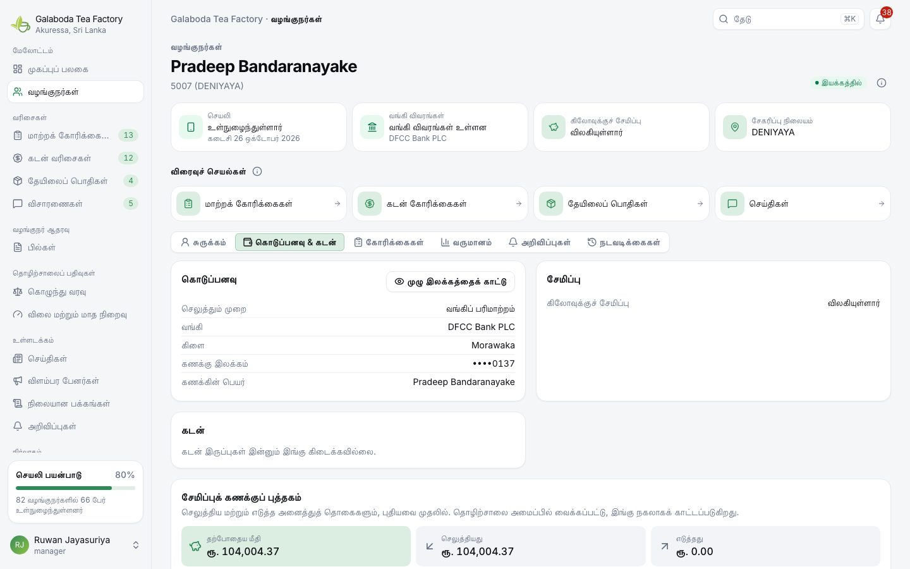
படம் 4.3 கொடுப்பனவு & கடன்
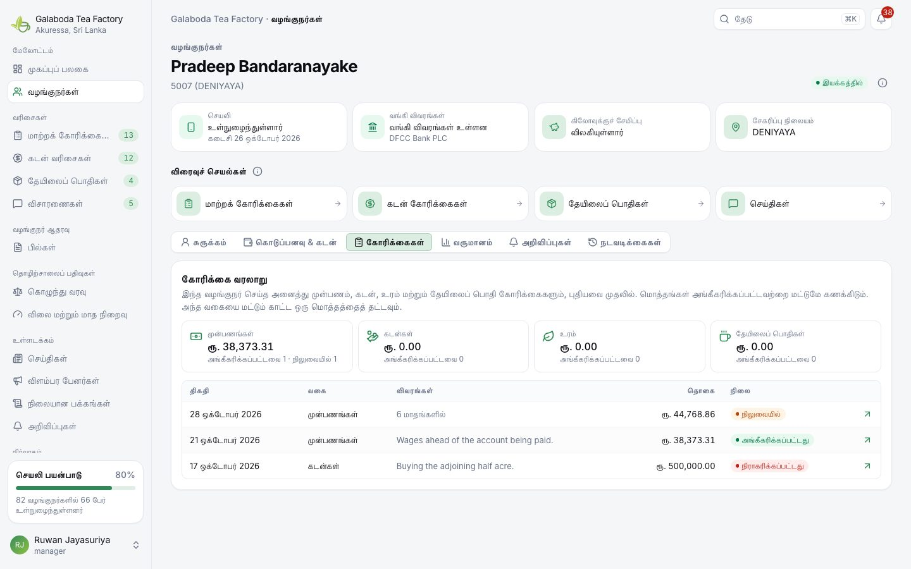
படம் 4.4 கோரிக்கைகள்
4.2 முழு வங்கிக் கணக்கு இலக்கத்தைக் காட்டுதல்
கொடுப்பனவு & கடன் தாவலில் முழு இலக்கத்தைக் காட்டு என்பதைக் கிளிக் செய்து, காரணத்தைத் தட்டச்சு செய்து (உதாரணமாக "கணக்கை உறுதிப்படுத்துமாறு வழங்குநர் கவுண்டரில் கேட்டார்") உறுதிப்படுத்தவும். காரணம் தணிக்கைப் பதிவில் பதியப்படும். நீங்கள் திரையை விட்டு வெளியேறியதும் இலக்கம் மீண்டும் மறைக்கப்படும்.
வழங்குநரைத் திறந்து, மேலே வலப்பக்கம் உள்ள செயலியின் கடவுச்சொல்லை மீட்டமை என்பதைக் கிளிக் செய்யவும்.
அது அவர்தான் என்பதை எப்படிச் சரிபார்த்தீர்கள் என்பதைத் தேர்ந்தெடுக்கவும் (உதாரணமாக "கவுண்டரில் புத்தகம்").
கன்சோல் ஒருமுறை கடவுச்சொல்லைக் காட்டும்: அதை வழங்குநரிடம் கொடுங்கள். அவரது தொலைபேசிகள் வெளியேற்றப்படும். அடுத்த முறை உள்நுழையும்போது தனது சொந்தக் கடவுச்சொல்லைத் தேர்ந்தெடுக்கச் செயலி கேட்கும். அதை யார் வழங்கினார், எப்போது என்பது பதியப்படும்.
அதன் அருகே உள்ள நிலைப் பொத்தான் வழங்குநரை இடைநிறுத்தும் அல்லது மூடும்.
4.4 வழங்குநரைச் சேர்த்தல் எழுதுவினைஞர், ஒத்திசைவு நிறுத்தம்
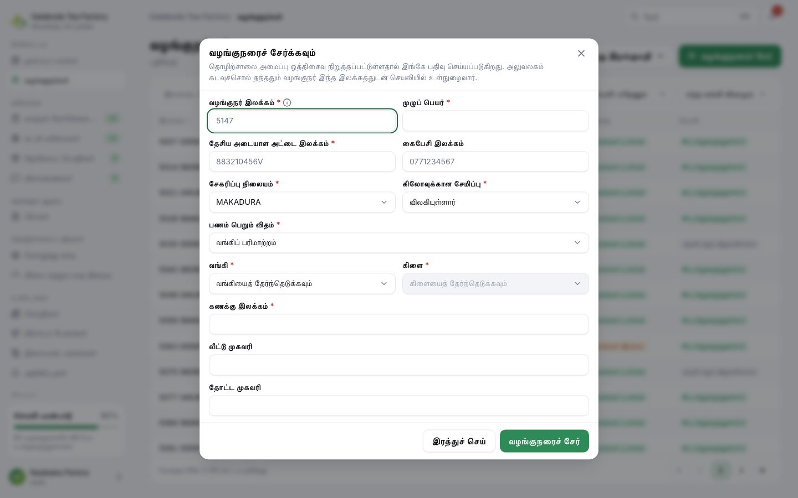
படம் 4.5 வழங்குநரைச் சேர்த்தல்
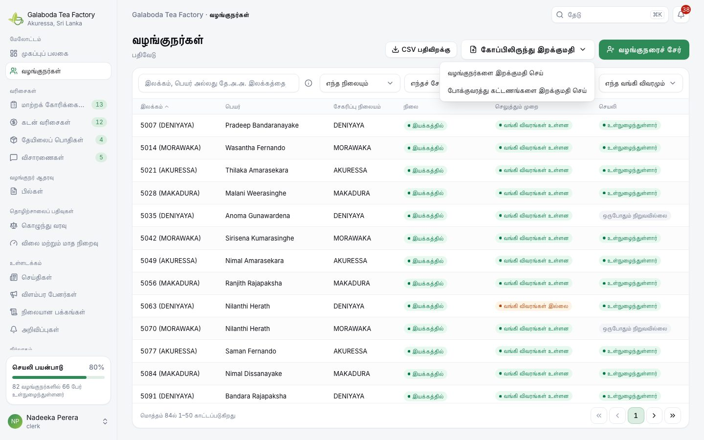
படம் 4.6 கோப்பிலிருந்து இறக்குமதி
வழங்குநர்கள் திரையில் வழங்குநரைச் சேர் என்பதைக் கிளிக் செய்யவும்.
தொழிற்சாலையின் சொந்த வழங்குநர் இலக்கம் தட்டச்சு செய்யவும் (எழுத்துகளும் இலக்கங்களும்; அடைப்புக்குறிக்குள் பிரிவு விருப்பத்துக்குரியது). அந்த இலக்கம் தொழிற்சாலையில் வேறு எங்கும் பயன்பாட்டில் இருக்கக்கூடாது: 5147 உம் 5147 (DENIYAYA) உம் ஒரே வழங்குநர்.
பெயர், தே.அ.அ. இலக்கம், கைபேசி, சேகரிப்பு நிலையம் மற்றும் கிலோவுக்குச் சேமிப்பு ஆகியவற்றை நிரப்பவும்.
பணம் செலுத்தும் முறையைத் தேர்ந்தெடுக்கவும். வங்கிப் பரிமாற்றத்துக்கு, தொழிற்சாலையின் பட்டியலிலிருந்து வங்கியையும் கிளையையும் தேர்ந்தெடுத்து, கணக்கு இலக்கத்தைத் தட்டச்சு செய்யவும்.
வழங்குநரைச் சேர் என்பதைக் கிளிக் செய்யவும். பின்னர் அவர் செயலியைப் பயன்படுத்த முடியுமாறு அவரது கடவுச்சொல்லை மீட்டமைக்கவும் (4.3).
பலரை ஒரே தடவையில் சேர்க்க: கோப்பிலிருந்து இறக்குமதி → வழங்குநர்களை இறக்குமதி செய் (படம் 4.6). தனிப் போக்குவரத்துக் கட்டணம் உள்ள வழங்குநர்களுக்கு போக்குவரத்து கட்டணங்களை இறக்குமதி செய். இறக்குமதி எப்படிச் செயல்படுகிறது என்பதற்குப் பகுதி 13.3 ஐப் பார்க்கவும்.
தொடக்க மீதிகள்
வழங்குநரின் கொடுப்பனவு & கடன் தாவலில் உள்ள தொடக்க மீதிகள் அட்டையில், தொழிற்சாலை இங்கு பதிவுகளை வைக்கத் தொடங்கியபோது வழங்குநர் செலுத்த வேண்டியிருந்தவையும் வைத்திருந்தவையும் உள்ளன: முன்பணம், கடன், உரம், தேயிலைப் பொதிகள், சேமிப்பு மற்றும் செலுத்தப்படாத மீதி, அனைத்தும் முழுத் தொழிற்சாலைக்கும் ஒரே தொடக்க மாதத்தின்படி (இங்கு பில்கள் உள்ள முதல் மாதம்), ஒரு குறிப்புடன். பலவற்றை ஒரே நேரத்தில்: வழங்குநர்கள் திரையில் கோப்பிலிருந்து இறக்குமதி. வழங்குநருக்கு எங்களுடைய பில் வெளியிடப்பட்டதும் அவை பூட்டப்படும்.
5. கடன் கோரிக்கைகளைத் தீர்மானித்தல் மேலாளர்
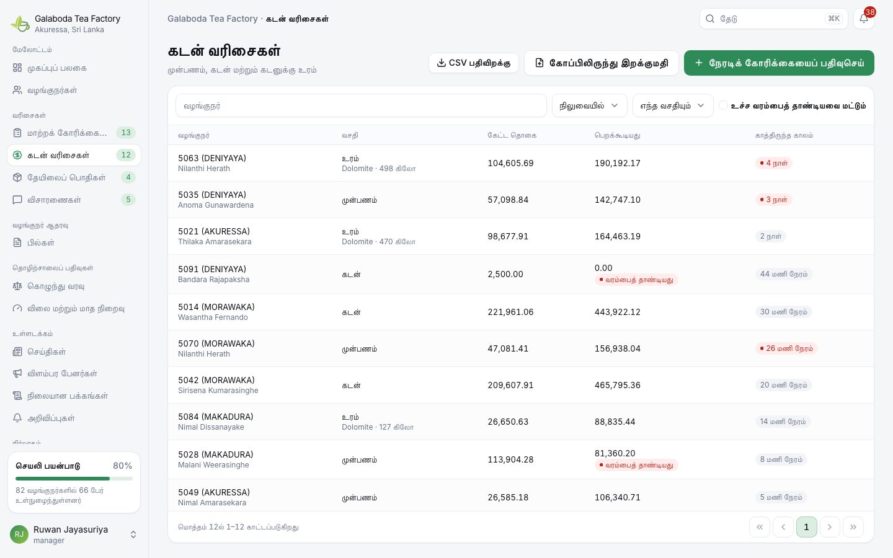
படம் 5.1 கடன் வரிசைகள்: முன்பணம், கடன் மற்றும் உரம் ஒரே பட்டியலில், பழையவை முதலில். வழங்குநரின் வரம்பை மீறும் கோரிக்கை "வரம்பைத் தாண்டியது" எனக் குறிக்கப்படும்.
கடன் வரிசைகள் என்பதைக் கிளிக் செய்யவும். நிலை, வசதி அல்லது உச்ச வரம்பைத் தாண்டியவை மட்டும் என்பதால் வடிகட்டவும்.
கோரிக்கையைத் திறக்க அதைக் கிளிக் செய்யவும் (படம் 5.2). இந்த வழங்குநர் பெறக்கூடிய தொகை மற்றும் இது கணக்கிடப்பட்ட முறை ஆகியவற்றைச் சரிபார்க்கவும்: வழங்குநர் செயலியில் பார்த்த அதே எண்கள்தான் இவை.
அங்கீகரி அல்லது நிராகரி என்பதைக் கிளிக் செய்யவும்.
தீர்மானக் குறிப்பு தட்டச்சு செய்யவும் (கட்டாயம்; வழங்குநர் அதைப் படிப்பார்), அல்லது ஒரு வழக்கமான குறிப்பைக் கிளிக் செய்யவும்.
உறுதிப்படுத்தவும். பின்னர் சாளரம் நினைவூட்டுவதுபோல் அங்கீகாரத்தைத் தொழிற்சாலை அமைப்பிலும் உள்ளிடுங்கள்.
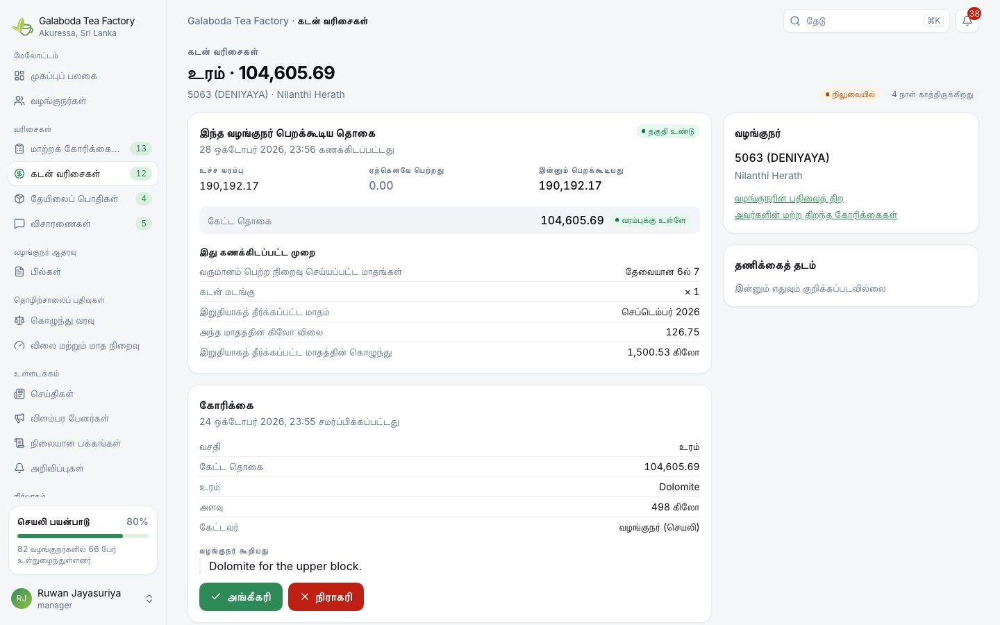
படம் 5.2 ஒரு உரக் கோரிக்கை, அதன் கணக்கீட்டுடன்.
உதாரணம்: கணக்கீட்டைப் படித்தல் (படம் 5.2)
வழங்குநர் 5063 (DENIYAYA) Dolomite 498 கிலோ கேட்கிறார் ரூ. 104,605.69
வருமானம் பெற்ற நிறைவு செய்யப்பட்ட மாதங்கள் 7 (தேவை 6)
இறுதியாகத் தீர்க்கப்பட்ட மாதம் செப்டெம்பர் 2026
அந்த மாதத்தின் கிலோ விலை ரூ. 126.75
இறுதியாகத் தீர்க்கப்பட்ட மாதத்தின் கொழுந்து 1,500.53 கிலோ
உச்ச வரம்பு 126.75 × 1,500.53 = 190,192.1775 → ரூ. 190,192.17
ஏற்கெனவே பெற்றது 0.00
இன்னும் பெறக்கூடியது ரூ. 190,192.17 → "வரம்புக்கு உள்ளே"
உச்ச வரம்பு சதம் வரை வெட்டப்படுகிறது, ஒருபோதும் மேல்நோக்கி முழுமையாக்கப்படுவதில்லை. எனவே காட்டப்படும் தொகையைப் படிவம் ஏற்றுக்கொள்ளும்.
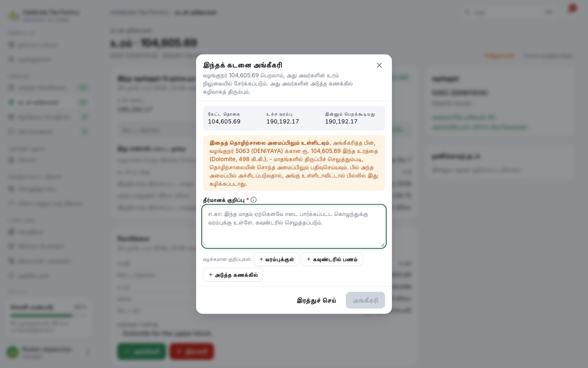
படம் 5.3 அங்கீகரி: தொழிற்சாலை அமைப்பில் உள்ளிடுமாறு நினைவூட்டல்
தொகை இப்போது வழங்குநரின் வரம்பை மீறினால் (அவர் கேட்ட பின் ஒரு மாதம் வெளியிடப்பட்டிருக்கலாம்);
ஒரு கடன் இன்னும் செலுத்தப்பட வேண்டியிருந்தால் (புதிய கடனுக்கு அல்லது முன்பணத்துக்கு), அல்லது ஒரு முன்பணம் இன்னும் தீராமல் இருந்தால் (முன்பணத்துக்கு);
வழங்குநர் இடைநிறுத்தப்பட்டிருந்தால் அல்லது மூடப்பட்டிருந்தால்.
6. கவுண்டரில் செய்யப்பட்ட கோரிக்கையைப் பதிவுசெய்தல் எழுதுவினைஞர், ஒத்திசைவு நிறுத்தம்
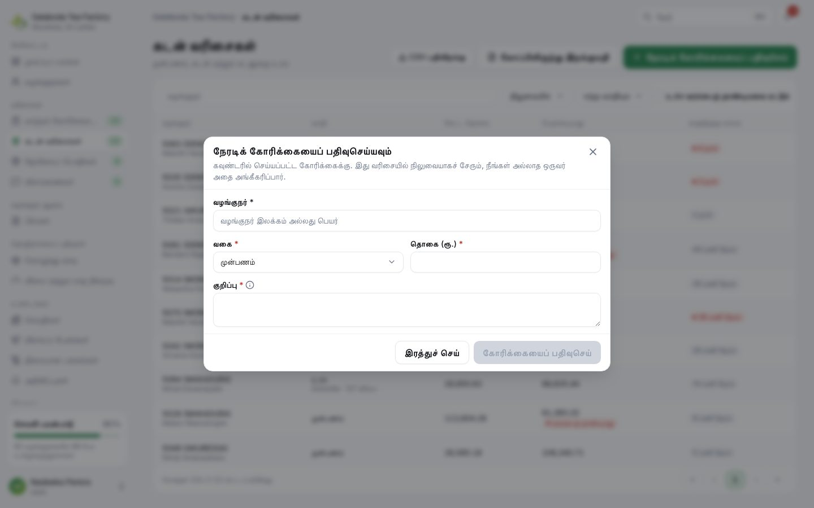
படம் 6.1 நேரடிக் கோரிக்கையைப் பதிவுசெய்தல்.
கடன் வரிசைகள் திரையில் நேரடிக் கோரிக்கையைப் பதிவுசெய் என்பதைக் கிளிக் செய்யவும்.
வழங்குநர் இலக்கம் அல்லது பெயரைத் தட்டச்சு செய்து வகையைத் தேர்ந்தெடுக்கவும் (முன்பணம், கடன் அல்லது உரம்).
தொகையைத் தட்டச்சு செய்யவும். கடன் அல்லது உரத்துக்குத் திருப்பிச் செலுத்தும் காலத்தைத் தேர்ந்தெடுக்கவும். உரத்துக்கு உர வகையையும் அளவையும் தேர்ந்தெடுக்கவும் (விலை தொழிற்சாலையின் உரப் பட்டியலிலிருந்து வரும்).
குறைந்தது 10 எழுத்துகள் கொண்ட குறிப்பைத் தட்டச்சு செய்யவும் (உதாரணமாக "கவுண்டரில் கேட்டார், பாடசாலைக் கட்டணத்துக்குத் தேவை").
கோரிக்கையைப் பதிவுசெய் என்பதைக் கிளிக் செய்யவும். அது நிலுவையாக வரிசையில் சேரும். ஒரு மேலாளர் அதைத் தீர்மானிப்பார்.
வரம்பை மீறும் கோரிக்கையும் கேட்டபடியே, வரம்புடன் சேர்த்துப் பதிவாகும். மேலாளர் அங்கீகரிக்க முயலும்போது கன்சோல் அதை மறுக்கும். பலவற்றை ஒரே தடவையில் பதிவுசெய்ய: கோப்பிலிருந்து இறக்குமதி.
7. தேயிலைப் பொதிகள் மேலாளர்
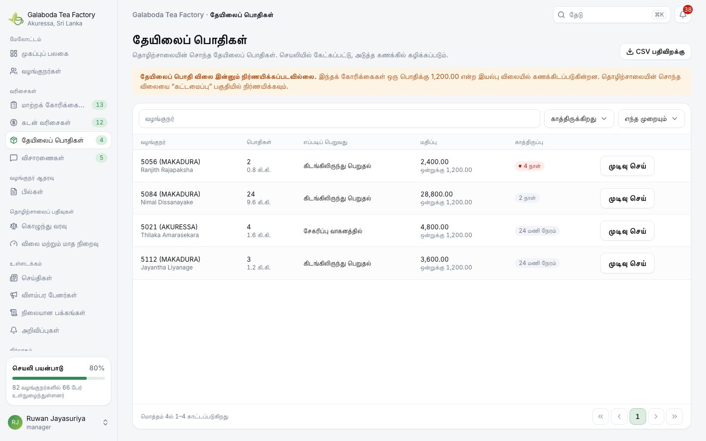
படம் 7.1 காத்திருக்கும் தேயிலைப் பொதிகள்: பொதிகள், எடை, அனுப்பப்படும் முறை மற்றும் மதிப்பு.
தேயிலைப் பொதிகள் என்பதைக் கிளிக் செய்யவும். வாகனம் புறப்படும் முன் அதன் ஓடர்களைப் பொதி செய்ய எந்த முறையும் → சேகரிப்பு வாகனத்தில் என வடிகட்டவும்.
ஒரு வரிசையில் முடிவு செய் என்பதைக் கிளிக் செய்யவும் (படம் 7.2).
முடிவுக் குறிப்பைத் தட்டச்சு செய்து (உதாரணமாக "திங்கள் முதல் கிடங்கிலிருந்து பெற்றுக்கொள்ளலாம்") அங்கீகரி அல்லது நிராகரி என்பதைக் கிளிக் செய்யவும்.
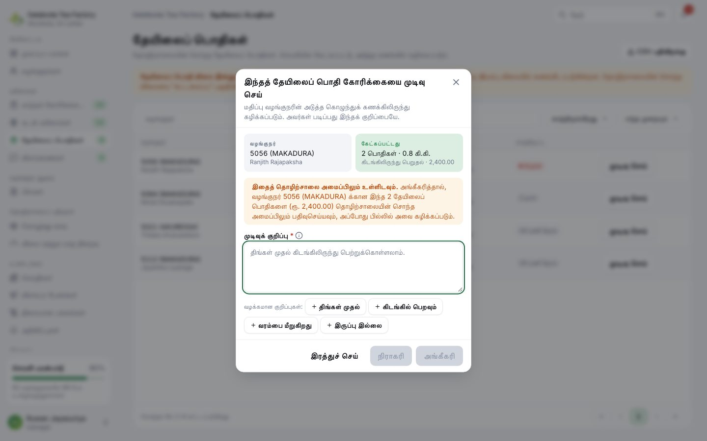
படம் 7.2 உதாரணம்: வழங்குநர் 5056 2 பொதிகள் (0.8 கிலோ) கேட்கிறார், கிடங்கிலிருந்து பெற்றுக்கொள்வார், ரூ. 2,400.00 அடுத்த பில்லின் தேயிலை வரியில் கழிக்கப்படும்.
நீங்கள் முடிவு செய்யும்போதே விலை நிர்ணயிக்கப்படும். மேலே ஒரு செம்மஞ்சள் வரி (படம் 7.1) இருந்தால், தொழிற்சாலை தனது சொந்தப் பொதி விலையை இன்னும் அமைக்கவில்லை என்று பொருள்: அதைக் கட்டமைப்பு → தேயிலைப் பொதிகள் பகுதியில் அமைக்கவும்.
8. மாற்றக் கோரிக்கைகள் எழுதுவினைஞர் அல்லது மேலாளர்
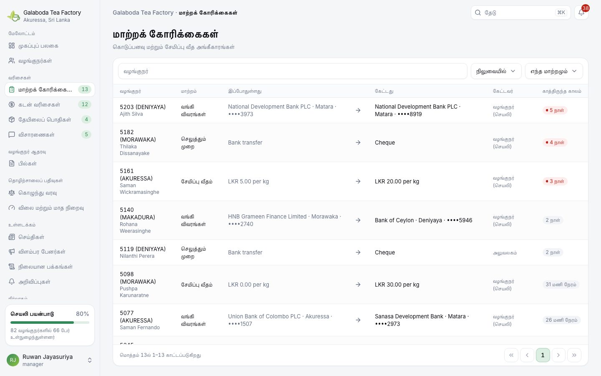
படம் 8.1 வழங்குநர்கள் கேட்ட மாற்றங்கள்: வங்கி விவரங்கள், செலுத்தும் முறை, சேமிப்பு வீதம் மற்றும் முகவரி, இப்போதுள்ள மதிப்பும் கேட்ட மதிப்பும் அருகருகே.
மாற்றக் கோரிக்கைகள் என்பதைக் கிளிக் செய்து ஒரு வரிசையைத் திறக்கவும் (படம் 8.2).
இப்போது இயக்கத்தில் என்பதை கேட்டது என்பதுடன் ஒப்பிடவும். மாறும் வரிகள் குறிக்கப்பட்டிருக்கும்.
வங்கி மாற்றத்துக்கு, அங்கீகரிக்கும் முன் வங்கிப் புத்தகத்தை அல்லது வங்கி அறிக்கையைச் சரிபாருங்கள்.
அங்கீகரி அல்லது நிராகரி என்பதைக் கிளிக் செய்து, குறிப்பைத் தட்டச்சு செய்து (உதாரணமாக "கணக்குப் புத்தகம் தே.அ.அ. அட்டையுடன் ஒப்பிட்டுச் சரிபார்க்கப்பட்டது") உறுதிப்படுத்தவும் (படம் 8.3).
அதே மாற்றத்தைத் தொழிற்சாலை அமைப்பிலும் செய்யுங்கள்.
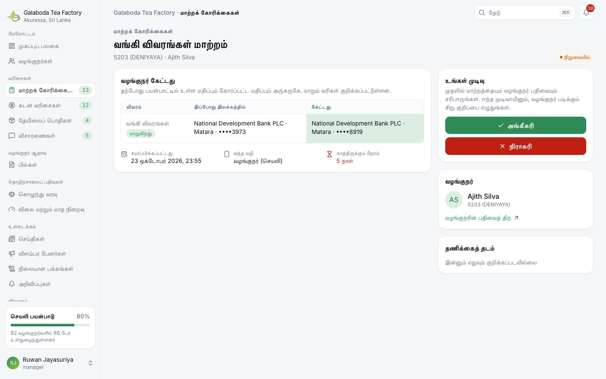
படம் 8.2 வங்கி விவர மாற்றம்
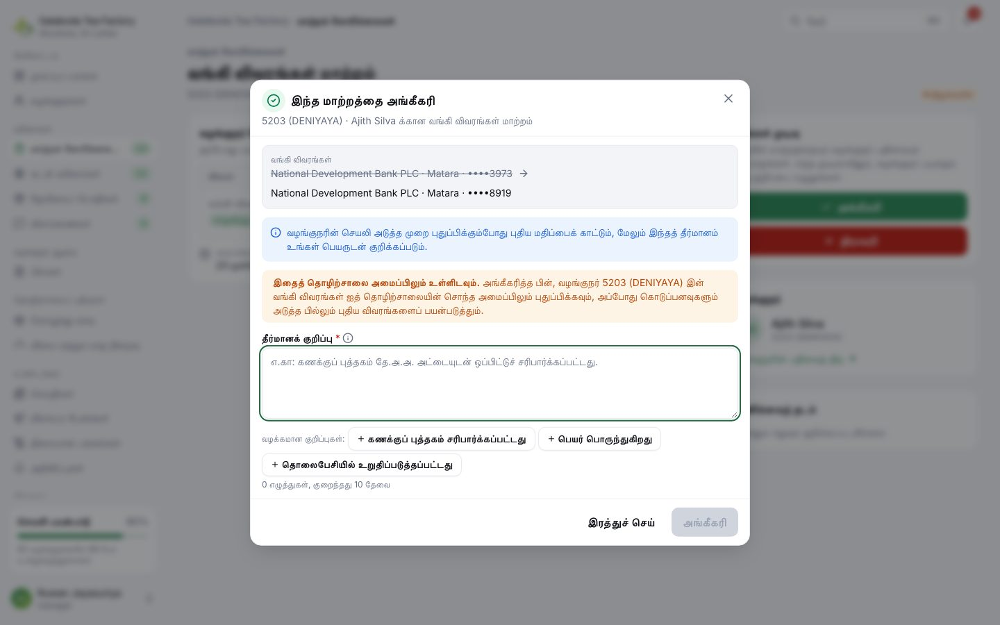
படம் 8.3 இந்த மாற்றத்தை அங்கீகரி
நீங்கள் அங்கீகரிக்கும் வரை வழங்குநருக்குப் பழைய கணக்கிலேயே பணம் செலுத்தப்படும். செயலி புதிய கணக்கை நிலுவையில் எனக் காட்டும். சேமிப்பு வீத மாற்றம், இன்னும் நிறைவு செய்யப்படாத அடுத்த மாதத்திலிருந்து தொடங்கும்.
9. விசாரணைகள் எழுதுவினைஞர்
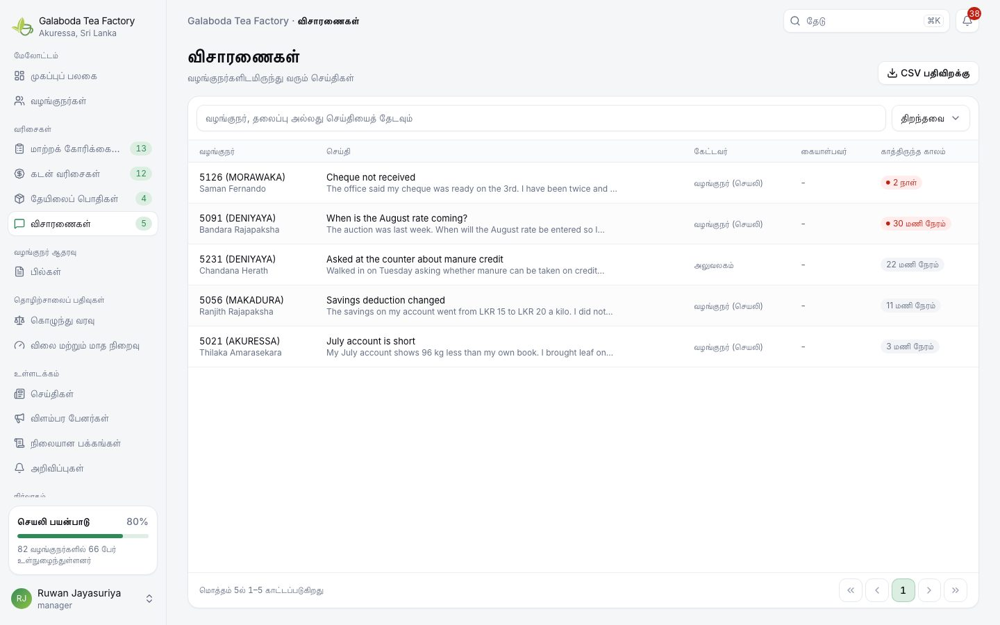
படம் 9.1 வழங்குநர்களிடமிருந்து வந்த செய்திகள்
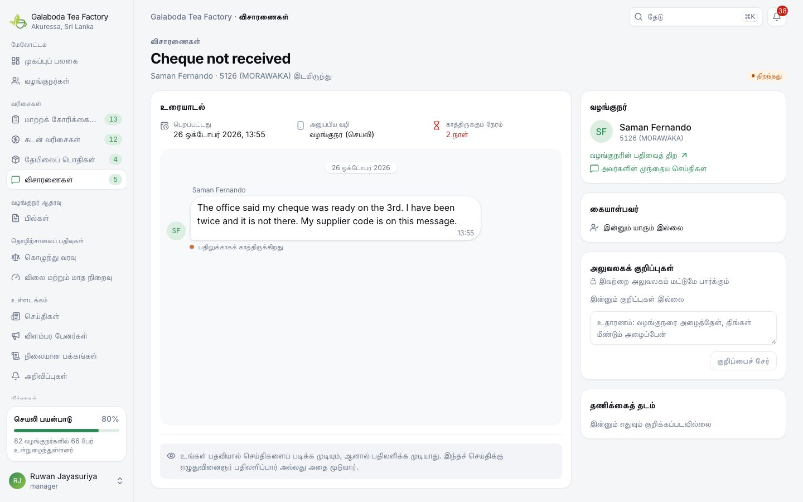
படம் 9.2 ஒரு உரையாடல்
விசாரணைகள் என்பதைக் கிளிக் செய்து ஒரு செய்தியைத் திறக்கவும்.
பதிலைத் தட்டச்சு செய்து (அல்லது பரிந்துரைக்கப்பட்ட பதிலைக் கிளிக் செய்து) அனுப்பவும். வழங்குநர் அதைச் செயலியில் படிப்பார், அவருக்கு அறிவிப்பும் வரும்.
மேலும் எதுவும் தேவையில்லை என்றால் விசாரணையை மூடவும். பதில் அளிக்காமல் மூடுவது, பதில் தேவையில்லாத செய்தியைக் கோப்பில் வைப்பதாகும்.
வலப்பக்கம் உள்ள அலுவலகக் குறிப்புகள் அலுவலகத்துக்கு மட்டுமே தெரியும் (உதாரணமாக "வழங்குநரை அழைத்தேன், திங்கள் மீண்டும் அழைப்பேன்"). மேலாளர் விசாரணைகளைப் படிக்கலாம், ஆனால் பதில் அளிக்க முடியாது (படம் 9.2, கீழே).
10. பில்கள்
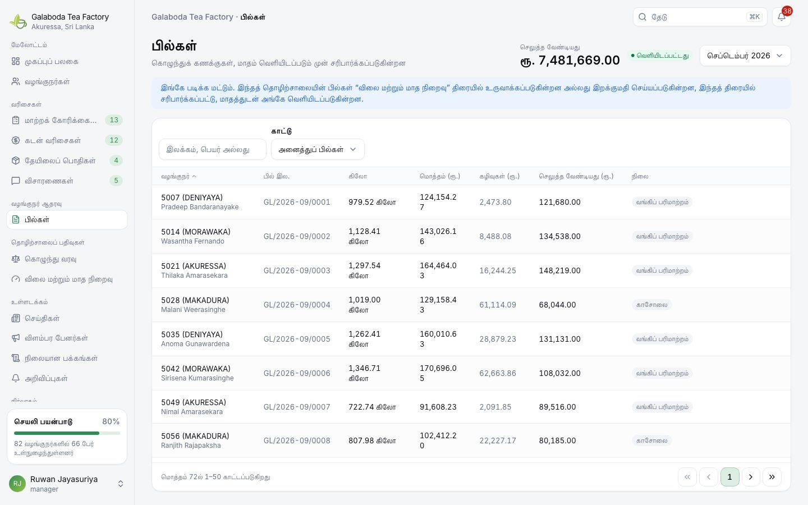
படம் 10.1 மாதத்தின் கொழுந்துக் கணக்குகள், செலுத்த வேண்டிய மொத்தமும் மாதத் தேர்வியும் சேர்ந்து.
பில்கள் என்பதைக் கிளிக் செய்து, மேலே வலப்பக்கம் மாதத்தைத் தேர்ந்தெடுக்கவும்.
இலக்கம், பெயர் அல்லது பில் இலக்கத்தால் தேடவும், அல்லது காட்டு மூலம், உதாரணமாக, செலுத்த எதுவும் இல்லாத பில்களை அல்லது வங்கி விவரங்கள் இல்லாத பில்களைப் பட்டியலிடவும்.
ஒரு வரிசையைக் கிளிக் செய்தால், வழங்குநர் பார்க்கும் விதத்திலேயே பில் திறக்கும் (படம் 10.2).
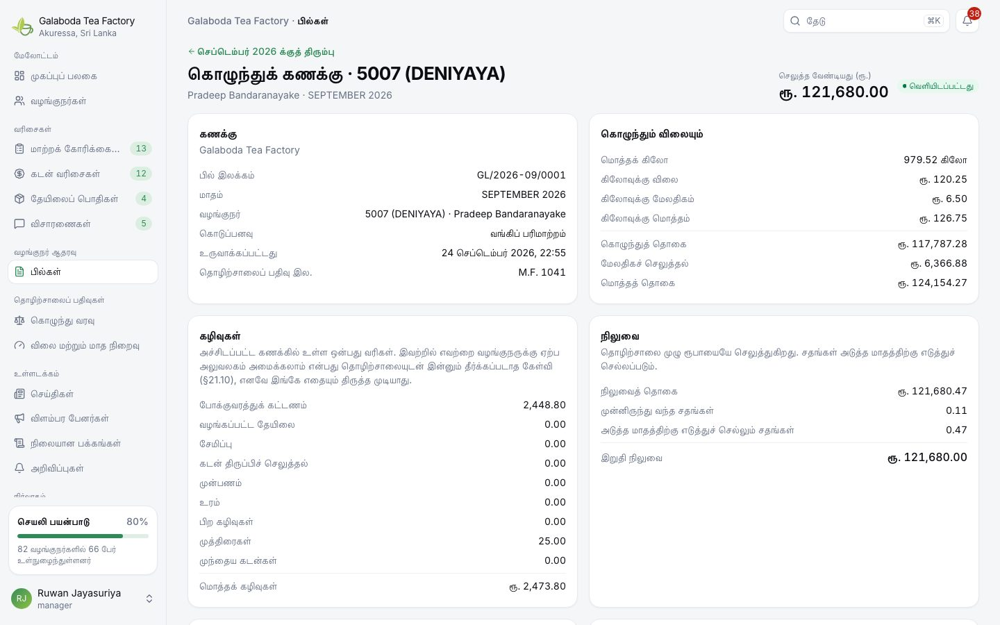
படம் 10.2 ஒரு பில், அச்சிடப்பட்ட சீட்டு போலவே அமைக்கப்பட்டது.
உதாரணம்: வழங்குநர் 5007, செப்டெம்பர் 2026 (படம் 10.2)
979.52 கிலோ × (விலை 120.25 + மேலதிகம் 6.50 = 126.75)
கொழுந்துத் தொகை 117,787.28
மேலதிகச் செலுத்தல் 6,366.88
முன்னிருந்து வந்த சதங்கள் 0.11
மொத்தத் தொகை 124,154.27
கழிவுகள் 2,473.80 (போக்குவரத்து 2,448.80 + முத்திரைகள் 25.00)
நிலுவைத் தொகை 121,680.47
இறுதி நிலுவை 121,680.00 சதங்கள் 0.47 ஒக்டோபருக்குக் கொண்டு செல்லப்பட்டது
பில்கள் திரை சரிபார்ப்பதற்கும் வழங்குநர்களுக்குப் பதில் அளிப்பதற்கும் உரியது. பில்கள் உருவாக்கப்படுவதும் வெளியிடப்படுவதும் விலை மற்றும் மாத நிறைவு திரையில் (பகுதிகள் 12 மற்றும் 13). தொழிற்சாலை அமைப்பு ஒத்திசைவு இயக்கத்தில் இருந்தால், பில்கள் தொழிற்சாலை அமைப்பிலிருந்து வரும், அவற்றைப் படிக்க மட்டுமே முடியும்.
11. கொழுந்து வரவு எழுதுவினைஞர், ஒத்திசைவு நிறுத்தம்
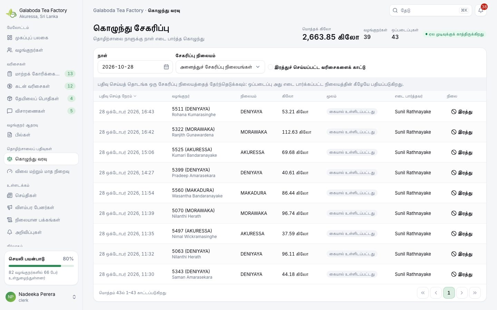
படம் 11.1 ஒரு நாளின் எடைகள்: 39 வழங்குநர்களிடமிருந்து 43 ஒப்படைப்புகளில் 2,663.85 கிலோ.
கொழுந்து வரவு என்பதைக் கிளிக் செய்யவும். நாள் மற்றும் சேகரிப்பு நிலையம் என்பவற்றைத் தேர்ந்தெடுக்கவும்.
ஒவ்வொரு எடையையும் உள்ளிடவும்: முதலில் வழங்குநர் இலக்கம், பின்னர் கிலோ. நீங்கள் உள்ளிடும்போதே மேலே உள்ள மொத்தங்கள் மாறும். எனவே தவறாகத் தட்டச்சு செய்த கிலோ பில்லை அடையும் முன்பே தெரியவரும்.
ஒரு எடையைத் திருத்த, அதன் வரிசையில் இரத்து என்பதைக் கிளிக் செய்து காரணத்தைக் கொடுங்கள். பின்னர் சரியானதை உள்ளிடுங்கள். எடை ஒருபோதும் நீக்கப்படுவதில்லை.
ஒவ்வொரு வழங்குநரின் கொழுந்தையும் அது எடை போடப்படும் அதே நாளில் உள்ளிடுங்கள்: செயலியில் உள்ள முன்பண வரம்பு இந்த மாதம் இதுவரையான கிலோவை வைத்தே கணக்கிடப்படுகிறது.
வெளியிடப்பட்ட மாதம் பூட்டப்படும்: அதன் கொழுந்தை இனி மாற்ற முடியாது.
தராசின் கோப்பிலிருந்து ஒரு நாளின் அல்லது மாதத்தின் எடைகளை இறக்குமதி செய்வது விரைவில் வரும்.
12. விலை மற்றும் மாத நிறைவு: கணக்கிடப்படும் பில்கள் எழுதுவினைஞர் மற்றும் மேலாளர்
பில்கள் கன்சோலிலேயே கணக்கிடப்படும் தொழிற்சாலைக்கு (கட்டமைப்பு → பில் கணக்கீடு → "இந்த கன்சோலில் கணக்கிடப்படும்").
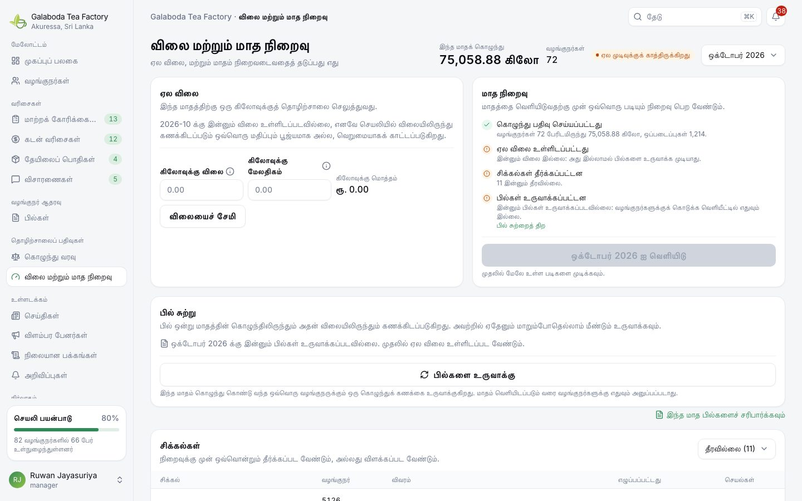
படம் 12.1 விலை மற்றும் மாத நிறைவு: ஏல விலை, மாத நிறைவுச் சரிபார்ப்புப் பட்டியல், பில் சுற்று மற்றும் சிக்கல்கள்.
விலையை உள்ளிடுதல் (மேலாளர்). ஏல முடிவு தெரிந்ததும் கிலோவுக்கு விலை மற்றும் ஏதேனும் இருந்தால் கிலோவுக்கு மேலதிகம் தட்டச்சு செய்து, விலையைச் சேமி என்பதைக் கிளிக் செய்யவும்.
சிக்கல்களைத் தீர்த்தல்: பக்கத்தின் கீழே உள்ளவை (உதாரணமாக கொழுந்து உள்ள ஆனால் வங்கி விவரங்கள் இல்லாத வழங்குநர்), ஒவ்வொன்றுக்கும் ஒரு குறிப்புடன்.
பில்களை உருவாக்குதல் (எழுதுவினைஞர் அல்லது மேலாளர்): பில்களை உருவாக்கு என்பதைக் கிளிக் செய்து, பின்னர் பில்கள் திரையில் இந்த மாத பில்களைச் சரிபார்க்கவும்.
வெளியிடுதல்: சரிபார்ப்புப் பட்டியலின் ஒவ்வொரு படியும் முடிந்ததும், வேறொரு மேலாளர் (விலையை உள்ளிட்டவர் அல்ல) வெளியிடு என்பதைக் கிளிக் செய்வார். பில்கள் செயலியில் தோன்றும், ஒவ்வொரு வழங்குநருக்கும் அறிவிப்பு செல்லும்.
வெளியிடுவது கடன் வரம்புகளை மாற்றும்
முன்பணம், கடன் மற்றும் உர வரம்புகள் கடைசியாக வெளியிடப்பட்ட மாதத்தை வைத்துக் கணக்கிடப்படுகின்றன. எனவே ஒரு மாதத்தை வெளியிடும்போது ஒவ்வொரு வழங்குநரின் வரம்புகளும் மாறும்.
விரைவில்
பில்லில் "பிற கழிவுகள்" தட்டச்சு செய்தல், கணக்கிடப்பட்ட ஒவ்வொரு பில்லையும் தொழிற்சாலையின் அச்சிடப்பட்ட சீட்டுடன் ஒப்பிடுதல் (நிறுத்துதல், விடுவித்தல் உட்பட) ஆகியவை சேவையகம் அவற்றை ஆதரிக்கும்போது இங்கே தோன்றும்.
13. விலை மற்றும் மாத நிறைவு: இறக்குமதி செய்யப்படும் பில்கள் எழுதுவினைஞர் மற்றும் மேலாளர்
தனது சொந்த அமைப்பே பில்களை அச்சிடும் தொழிற்சாலைக்கு (galaboda): எழுதுவினைஞர் முடிந்த பில்களை இறக்குமதி செய்கிறார், கன்சோல் அவற்றை அச்சிடப்பட்டபடியே வைத்திருக்கிறது, ஒரு மேலாளர் அவற்றை வெளியிடுகிறார். எழுதுவினைஞருக்கு இந்தப் பக்கத்தில் விலை படிக்க மட்டுமே தெரியும், வெளியிடு பொத்தான் தெரியாது.
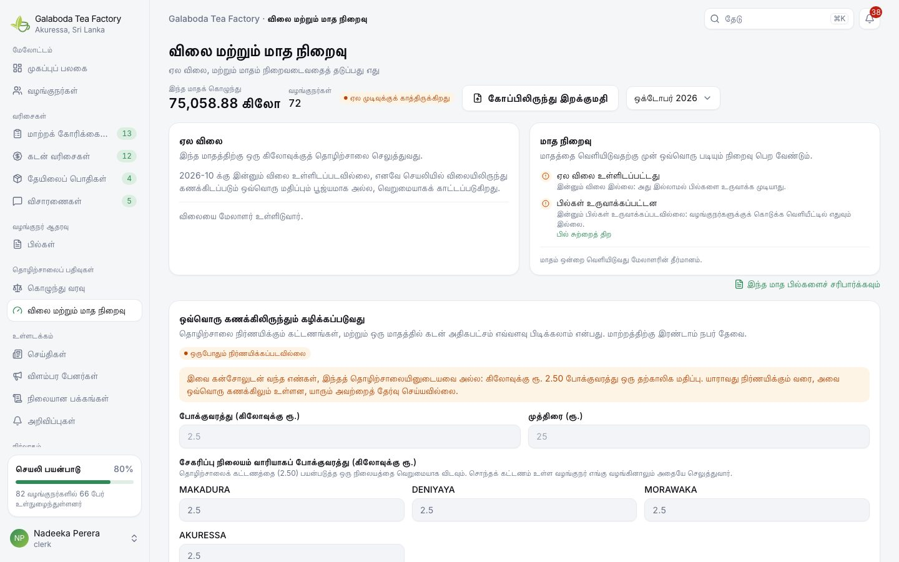
படம் 13.1 பில்களை இறக்குமதி செய்யும் தொழிற்சாலைக்கான விலை மற்றும் மாத நிறைவு: மேலே "கோப்பிலிருந்து இறக்குமதி".
13.1 ஒரு மாதத்தின் பில்களை இறக்குமதி செய்தல்
சீட்டுகள் அச்சிடப்பட்ட பின் (அடுத்த மாதம் ஏறக்குறைய 10ஆம் திகதி), தொழிற்சாலை அமைப்பில் மாதத்தின் முடிந்த பில்களை Excel க்கு ஏற்றுமதி செய்யவும்.
விலை மற்றும் மாத நிறைவு திரையில் கோப்பிலிருந்து இறக்குமதி என்பதைக் கிளிக் செய்யவும். சாளரம் நிரல்களைப் பட்டியலிடும்; கட்டாயமானவை * எனக் குறிக்கப்பட்டிருக்கும் (படம் 13.2). மாதிரியைப் பதிவிறக்கு ஒரு உதாரண வரிசையுடன் கூடிய கோப்பைத் தரும்.
கோப்பைத் தேர்ந்தெடுக்கவும். எதையும் சேமிக்கும் முன் கன்சோல் ஒவ்வொரு வரிசையையும் சரிபார்க்கும்.
ஒரு வரிசை தவறாக இருந்தால் எதுவும் சேமிக்கப்படாது: பட்டியல் அந்த வரிசையையும் சிக்கலையும் குறிப்பிடும். கோப்பைத் திருத்தி மீண்டும் இறக்குமதி செய்யவும்.
கோப்பு ஏற்றுக்கொள்ளப்பட்டதும் பில்கள் திரையில் பில்களைச் சரிபாருங்கள். கோப்பை இறக்குமதி செய்யாத ஒரு மேலாளர் மாதத்தை வெளியிடுவார்.
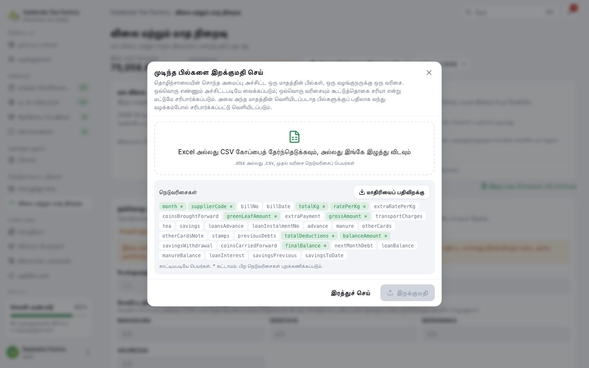
படம் 13.2 முடிந்த பில்களை இறக்குமதி செய்: கோப்பு பயன்படுத்த வேண்டிய நிரல் பெயர்கள்.
13.2 இறக்குமதி சரிபார்ப்பவை
சரிபார்ப்பு
மறுப்புக்கு உதாரணம்
ஒவ்வொரு வரிசையும் சதம் வரை சரியாகக் கூடுகிறது
மொத்தத் தொகை, கொழுந்துத் தொகை + மேலதிகம் + முன்னிருந்து வந்த சதங்கள் என்பதற்குச் சமமாக இல்லை
கன்சோலில் அங்கீகரிக்கப்பட்ட அனைத்தும் சீட்டில் உள்ளன
"5708: இந்த மாதத்துக்கு நாங்கள் ரூ. 40,000.00 அங்கீகரித்தோம், சீட்டில் அது இல்லை." அதைத் தொழிற்சாலை அமைப்பில் உள்ளிட்டு மீண்டும் ஏற்றுமதி செய்யவும்
மாதம் முடிந்துவிட்டது, வரிசைப்படி வருகிறது
20 ஒக்டோபர் அன்று ஒக்டோபரை இறக்குமதி செய்தல், அல்லது கடைசியாக வெளியிட்ட மாதத்துக்கு முந்தைய மாதத்தை இறக்குமதி செய்தல்
நிலுவை நிரல்கள் உள்ளன
Loan Balance, Manure Balance அல்லது Savings To-date நிரல்கள் இல்லாத கோப்பு
ஒவ்வொரு பிரிவுக்கும் தனிக் கோப்பு இருக்கலாம்: ஒவ்வொரு கோப்பும் அதில் உள்ள வழங்குநர்களை மட்டுமே மாற்றும். மாதம் வெளியிடப்பட்ட பின் வரும் பிரிவுக் கோப்பு, ஒரு மேலாளர் அதன் பில்களை வெளியிடும் வரை காத்திருக்கும்.
13.3 எந்தக் கோப்பையும் இறக்குமதி செய்தல்
Excel (.xlsx) அல்லது CSV, முதல் வரிசையில் நிரல் பெயர்களுடன்.
எல்லா வரிசைகளும் அல்லது எதுவும் இல்லை: ஒரு சிக்கல் இருந்தாலும் முழுக் கோப்பும் மறுக்கப்படும். வரிசை 2 தான் முதல் தரவு வரிசை.
எண்கள் மறுக்கப்படும், ஒருபோதும் முழுமையாக்கப்படுவதில்லை: அதிகமான தசம இடங்கள், கழித்தல் குறி, அல்லது 31 பெப்ரவரி.
ஒரு கோப்பில் 5,000 வரிசைகள் வரை.
14. செய்திகள், பேனர்கள் மற்றும் நிலையான பக்கங்கள் தொகுப்பாளர்
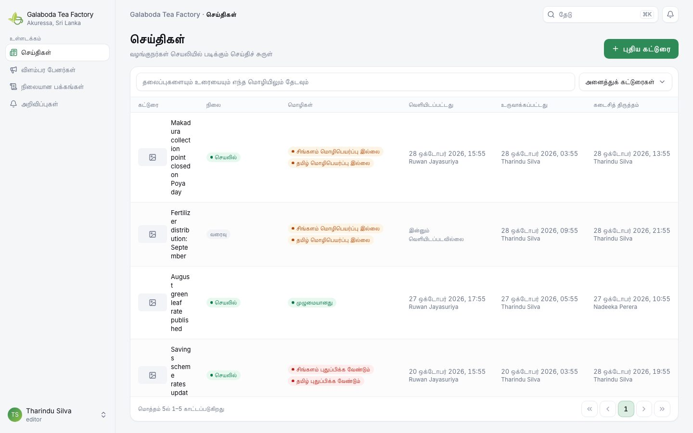
படம் 14.1 செய்திகள்: ஒவ்வொரு கட்டுரையின் நிலையும், எந்த மொழிகள் விடுபட்டுள்ளன என்பதும்.
14.1 செய்திக் கட்டுரை எழுதுதல்
செய்திகள் → புதிய கட்டுரை என்பதைக் கிளிக் செய்யவும்.
ஒவ்வொரு மொழித் தாவலிலும் (சிங்களம், ஆங்கிலம், தமிழ்) தலைப்பையும் உரையையும் எழுதுங்கள். அட்டைப் படம் இருந்தால் சேர்க்கவும்.
வெளியிடு என்பதைக் கிளிக் செய்யவும், அல்லது பின்னர் வெளியிட ஒரு திகதியையும் நேரத்தையும் தேர்ந்தெடுக்கவும்.
மொழிபெயர்ப்பு விடுபட்டிருக்கலாம்: அந்த வாசகருக்குச் செயலி ஆங்கிலத்தைக் காட்டும், பட்டியல் அதைக் குறிக்கும் (உதாரணமாக "சிங்களம் மொழிபெயர்ப்பு இல்லை"). "புதுப்பிக்க வேண்டும்" என்றால், அந்த மொழிபெயர்ப்பு எழுதப்பட்ட பின் ஆங்கில உரை மாறியுள்ளது என்று பொருள்.
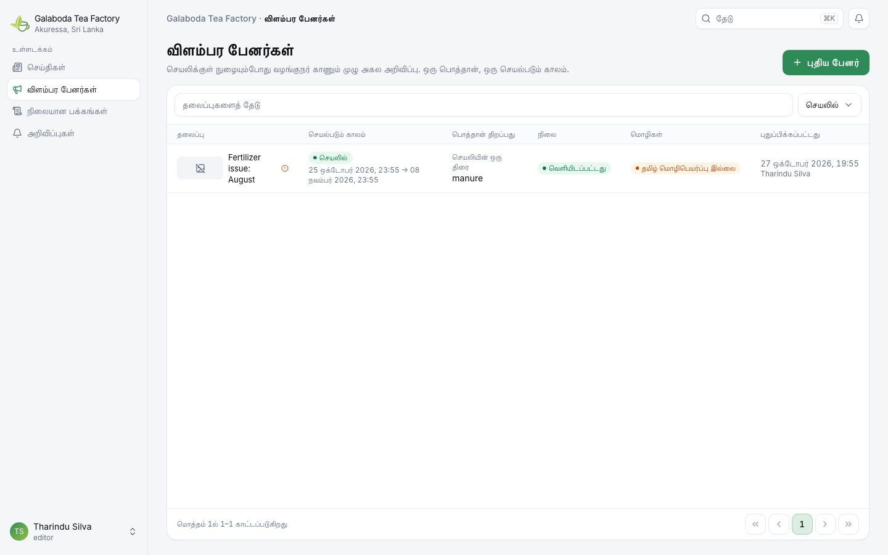
படம் 14.2 விளம்பர பேனர்கள்: காட்டப்படும் காலமும், பொத்தான் திறப்பதும்.
14.2 விளம்பர பேனர் வைத்தல்
விளம்பர பேனர்கள் → புதிய பேனர்.
ஒவ்வொரு மொழியிலும் தலைப்பையும் பொத்தான் வாசகத்தையும் எழுதுங்கள். படம் இருந்தால் பதிவேற்றுங்கள்.
பொத்தான் எதைத் திறக்கும் என்பதையும் (செயலியில் ஒரு திரை, ஒரு இணையதளம், ஒரு தொலைபேசி இலக்கம் அல்லது ஒரு மின்னஞ்சல்), தொடக்க மற்றும் முடிவுத் திகதிகளையும் தேர்ந்தெடுக்கவும்.
வெளியிடுங்கள். தொடக்க மற்றும் முடிவுத் திகதிகளுக்கு இடையில் மட்டுமே வழங்குநர்கள் அதைப் பார்ப்பார்கள்.
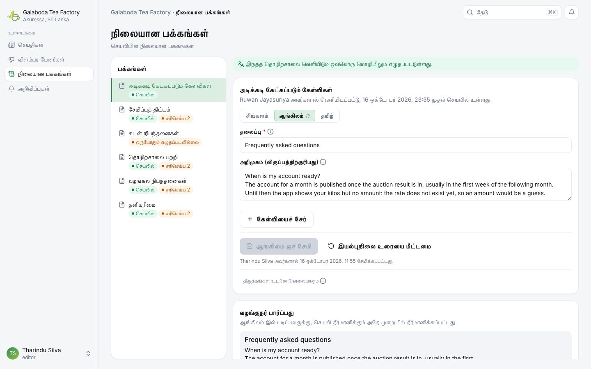
படம் 14.3 நிலையான பக்கங்கள்: அடிக்கடி கேட்கப்படும் கேள்விகள், சேமிப்புத் திட்டம், கடன் நிபந்தனைகள், எங்களைப் பற்றி, நிபந்தனைகள் மற்றும் தனியுரிமை, வழங்குநர் பார்ப்பதன் முன்னோட்டத்துடன்.
14.3 நிலையான பக்கத்தைத் திருத்துதல்
பக்கத்தையும் மொழியையும் தேர்ந்தெடுத்து, உரையை மாற்றுங்கள் அல்லது ஒரு கேள்வியைச் சேருங்கள், பின்னர் சேமிக்கவும் என்பதைக் கிளிக் செய்யவும். செயலில் உள்ள பக்கத்தில் செய்யும் திருத்தம் உடனே செயலுக்கு வரும். இயல்புநிலை உரையை மீட்டமை பக்கத்தை வழக்கமான சொற்களுக்கு மீண்டும் கொண்டு வரும்.
15. அறிவிப்புகள்
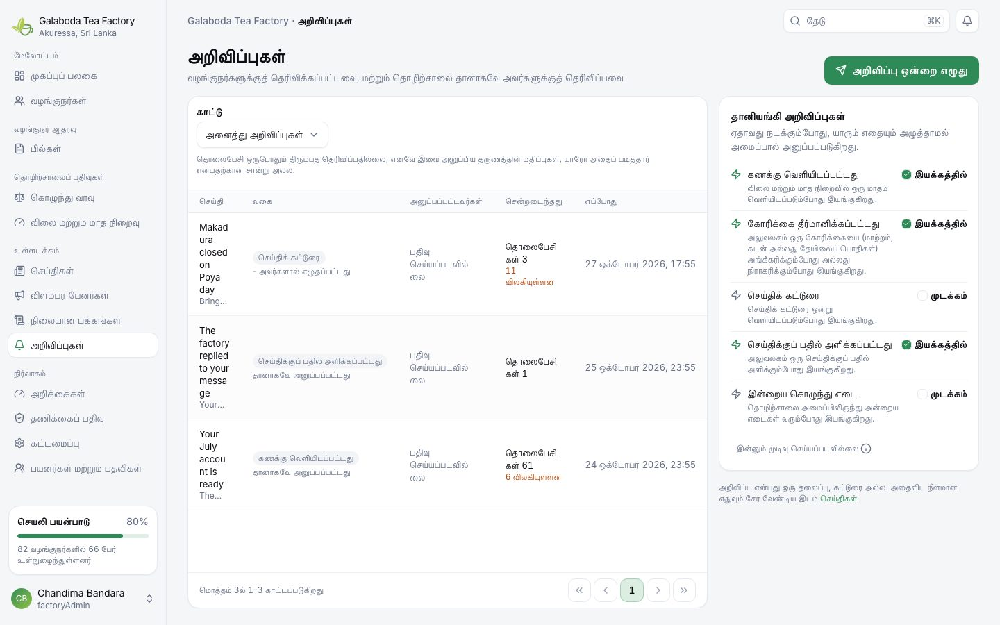
படம் 15.1 அனுப்பப்பட்ட அறிவிப்புகள், வலப்பக்கம் தானியங்கி அறிவிப்புகள்.
தானியங்கி (வலப்பக்கம்): "கணக்கு வெளியிடப்பட்டது", "கோரிக்கை தீர்மானிக்கப்பட்டது", "செய்திக்குப் பதில் அளிக்கப்பட்டது" மற்றும் பிற, ஒவ்வொன்றும் தொழிற்சாலைக்கு இயக்கப்பட்டோ நிறுத்தப்பட்டோ இருக்கும்.
அறிவிப்பு ஒன்றை எழுது: எல்லா வழங்குநர்களுக்கும், ஒரு சேகரிப்பு நிலையத்துக்கு அல்லது ஒரு வழங்குநருக்கு, இப்போதோ பின்னரோ ஒரு தலைப்புச் செய்தி. அனுப்பிய அறிவிப்பைத் திரும்பப் பெற முடியாது. எனவே அனுப்பும் முன் அது யாரைச் சென்றடையும் என்று கன்சோல் சரிபார்க்கும்.
ஒவ்வொன்றும் எத்தனை தொலைபேசிகளைச் சென்றடைந்தது, எத்தனை பேர் அந்த வகையை நிறுத்தியிருந்தனர் என்பதைப் பட்டியல் காட்டும்.
ஒவ்வொரு மொழியிலும்: எழுதும் அறிவிப்புக்குத் தொழிற்சாலையின் ஒவ்வொரு மொழிக்கும் ஒரு தாவல் உண்டு. ஆங்கிலம் கட்டாயம்; சிங்களமும் தமிழும் விருப்பத்தேர்வு, வெறுமையாக விடப்பட்ட மொழியில் ஆப் உள்ள வழங்குநருக்கு ஆங்கிலப் பிரதி கிடைக்கும். எதுவும் இல்லாத தாவல் குறிக்கப்படும், அனுப்பும் முன் உறுதிப்படுத்தல் அந்த மொழிகளைக் குறிப்பிடும். ஒரு மொழியில் தலைப்பு, செய்தி இரண்டையும் எழுதவும், அல்லது எதையும் எழுத வேண்டாம்.
16. கட்டமைப்பு தொழிற்சாலை நிர்வாகி
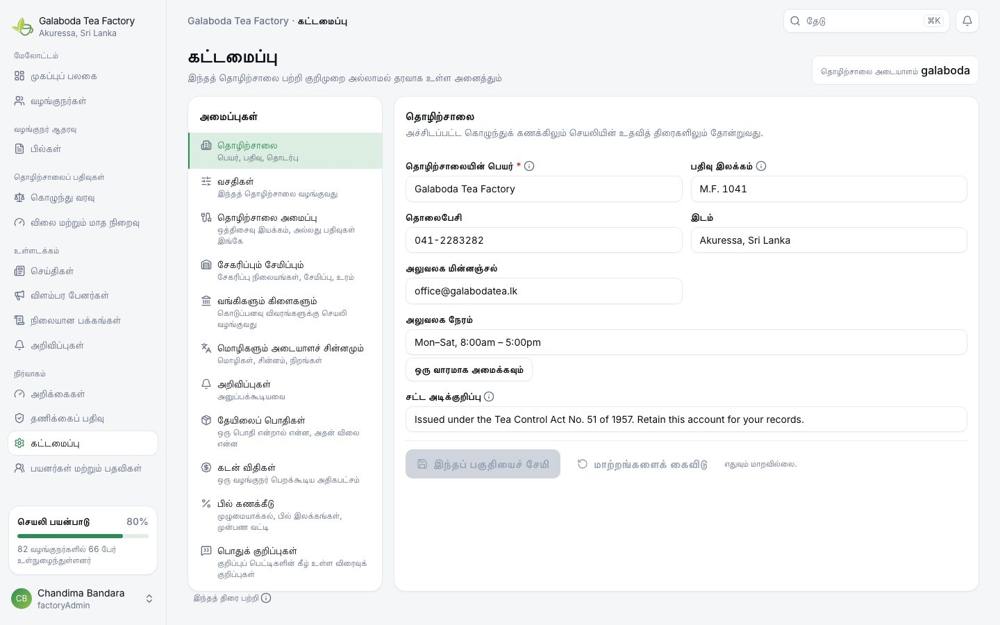
படம் 16.1 கட்டமைப்பு: இடப்பக்கம் பதினொரு பகுதிகள்; ஒவ்வொன்றும் தனியாகச் சேமிக்கப்படும்.
இடப்பக்கம் ஒரு பகுதியைத் தேர்ந்தெடுத்து, புலங்களை மாற்றவும்.
இந்தப் பகுதியைச் சேமி என்பதைக் கிளிக் செய்து உறுதிப்படுத்தவும். மாற்றங்களைக் கைவிடு சேமிக்கப்பட்டதை மீண்டும் கொண்டு வரும்.
பகுதி
அங்கே நீங்கள் அமைப்பது
தொழிற்சாலை
பெயர், பதிவு இலக்கம், தொலைபேசி, இருப்பிடம், மின்னஞ்சல், அலுவலக நேரம், ஒவ்வொரு பில்லிலும் அச்சிடப்படும் சட்ட அடிக்குறிப்பு
வசதிகள்
செயலியும் கன்சோலும் வழங்கும் சேவைகள்: சேமிப்பு, முன்பணம், கடன், உரம், தேயிலைப் பொதிகள், செய்திகள், பேனர்கள் மற்றும் பல
தொழிற்சாலை அமைப்பு
ஒத்திசைவு இயக்கம் (பதிவுகள் தொழிற்சாலையின் சொந்த அமைப்பிலிருந்து வரும்) அல்லது நிறுத்தம் (அலுவலகம் அவற்றை இங்கே வைத்திருக்கும்)
சேகரிப்பும் சேமிப்பும்
சேகரிப்பு நிலையங்கள், வழங்குநர்கள் தேர்ந்தெடுக்கக்கூடிய சேமிப்புத் தொகைகள், மூட்டை அளவும் விலையும் கொண்ட உரப் பட்டியல்
வங்கிகளும் கிளைகளும்
வழங்குநர்கள் தேர்ந்தெடுக்கும் வங்கிகள்
மொழிகளும் அடையாளச் சின்னமும்
மொழிகள், நிறங்கள் மற்றும் இலச்சினை
அறிவிப்புகள்
எவற்றை அனுப்பலாம்
தேயிலைப் பொதிகள்
பொதியின் அளவு, விலை, மாதத்துக்கு எத்தனை பொதிகள்
கடன் விதிகள்
ஒவ்வொரு வரம்பும் எப்படிக் கணக்கிடப்படுகிறது, வழங்கப்படும் திருப்பிச் செலுத்தும் காலங்கள்
பில் கணக்கீடு
பில்கள் எங்கிருந்து வருகின்றன, ரூ. 1, 5 அல்லது 10 ஆகச் செலுத்துதல், அடுத்த பில் இலக்கம், முன்பண மற்றும் கடன் வட்டி
பொதுக் குறிப்புகள்
தீர்மான மற்றும் பதில் பெட்டிகளின் கீழ் பரிந்துரைக்கப்படும் குறிப்புகள்
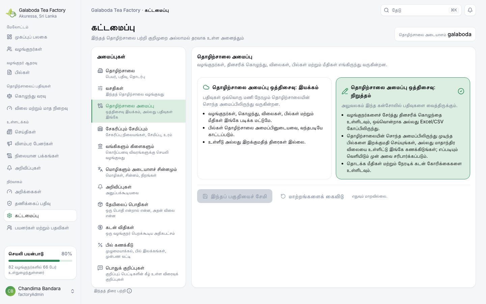
படம் 16.2 தொழிற்சாலை அமைப்பு: ஒத்திசைவு இயக்கம் அல்லது நிறுத்தம்
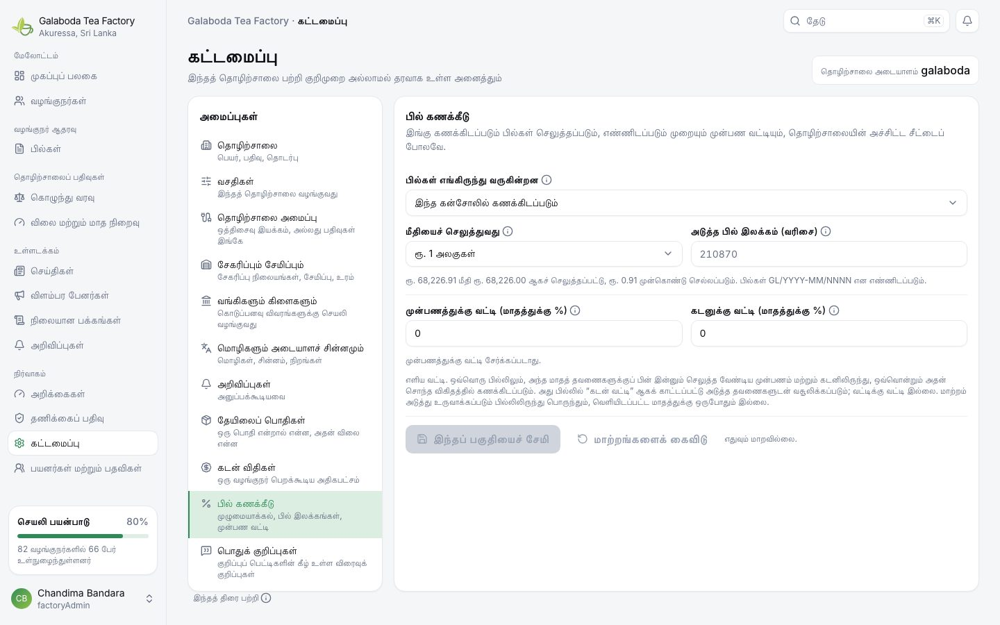
படம் 16.3 பில் கணக்கீடு
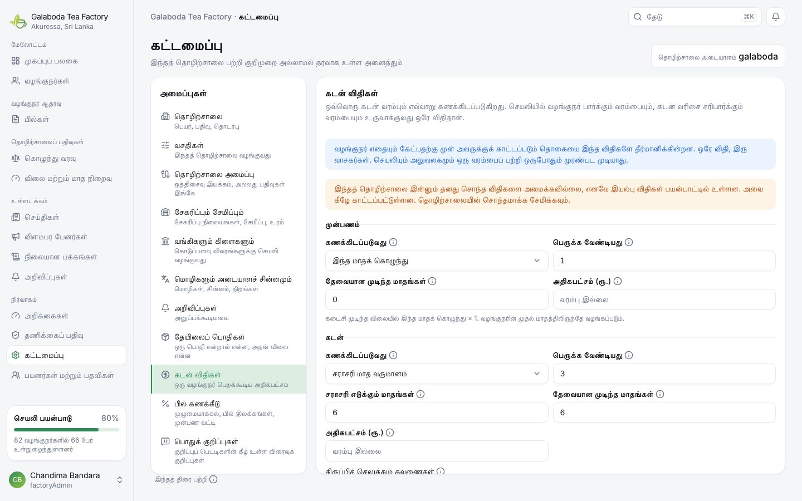
படம் 16.4 கடன் விதிகள்
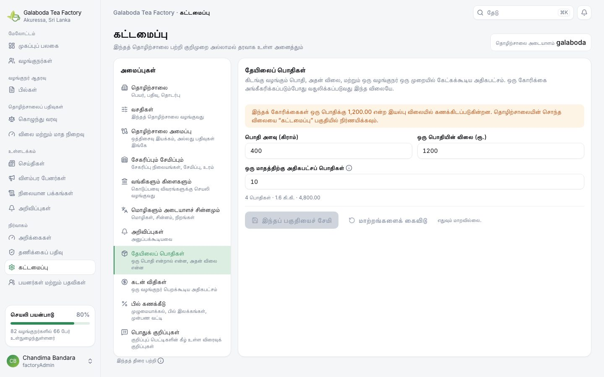
படம் 16.5 தேயிலைப் பொதிகள்
உதாரணம்: ஒரு கடன் விதி
கடன்: கணக்கிடப்படுவது சராசரி மாத வருமானம், சராசரி எடுக்கும் மாதங்கள் 6, பெருக்க வேண்டியது 3, தேவையான முடிந்த மாதங்கள் 6, அதிகபட்சம் வெறுமையாக. சராசரி ரூ. 84,341.08 உள்ள வழங்குநர் ரூ. 253,023.24 வரை கடன் பெறலாம். புலங்களுக்குக் கீழே திரை இந்த விதியை ஒரு வாக்கியமாக எழுதிக் காட்டும்.
கன்சோல் மறுக்கும் மாற்றங்கள்
ஒரு மாதத்துக்குப் பில்கள் உருவாக்கப்பட்டு இன்னும் வெளியிடப்படாத நிலையில், தொழிற்சாலை அமைப்பை அல்லது பில்கள் வரும் இடத்தை மாற்றுதல்.
பணம் இன்னும் வைத்திருக்கப்படும் அல்லது செலுத்தப்பட வேண்டிய நிலையில், சேமிப்பு, ஒரு கடன் வசதி அல்லது தேயிலைப் பொதிகளை நிறுத்துதல்.
எடைகள் பயன்படுத்தும் சேகரிப்பு நிலையத்தை, அல்லது மாற்று மொழியை நீக்குதல்.
17. பயனர்கள் மற்றும் பதவிகள் தொழிற்சாலை நிர்வாகி
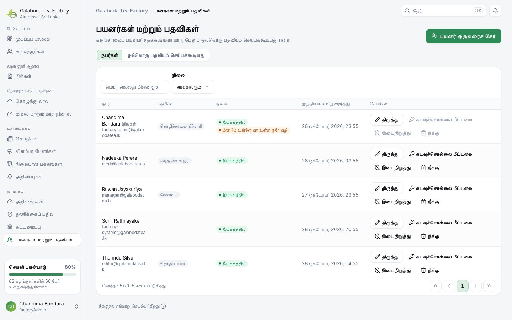
படம் 17.1 நபர்கள்: கன்சோலின் ஒவ்வொரு பயனரும், அவரது பதவியும் நிலையும்.
பயனர்கள் மற்றும் பதவிகள் → பயனர் ஒருவரைச் சேர்: பெயர், மின்னஞ்சல் மற்றும் பதவி.
கன்சோல் முதல் கடவுச்சொல்லை ஒரு முறை மட்டுமே காட்டும். அதைப் பயனரிடம் கொடுங்கள்; முதல் முறை உள்நுழையும்போது அவர் அதை மாற்ற வேண்டும்.
வரிசையிலிருந்தே கடவுச்சொல்லை மீட்டமை, இடைநிறுத்து அல்லது நீக்கு. நீக்குதல் மூன்று நாட்கள் காத்திருக்கும், அதுவரை அதைத் திரும்பப்பெறலாம்.
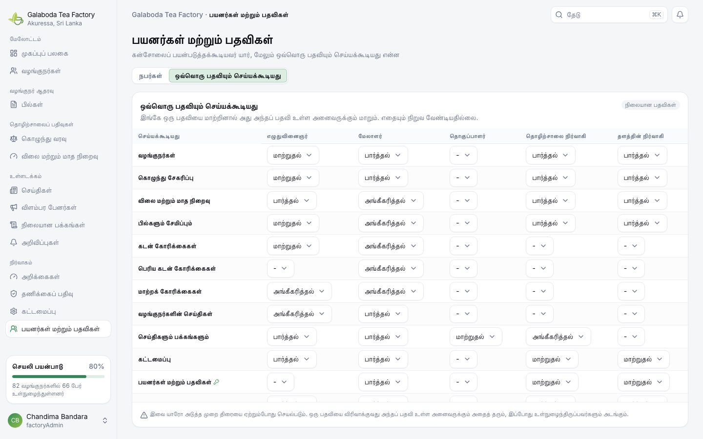
படம் 17.2 ஒவ்வொரு பதவியும் செய்யக்கூடியது: ஒவ்வொரு பகுதிக்கும் பார்த்தல், மாற்றுதல் அல்லது அங்கீகரித்தல்.
கடைசி நிர்வாகியை நீக்கவோ, உங்கள் சொந்தப் பதவியை மாற்றவோ, பயனர்களை நிர்வகிக்க யாரும் இல்லாத நிலையை உருவாக்கவோ கன்சோல் அனுமதிக்காது.
18. அறிக்கைகள், தணிக்கைப் பதிவு மற்றும் தரவு நிலை
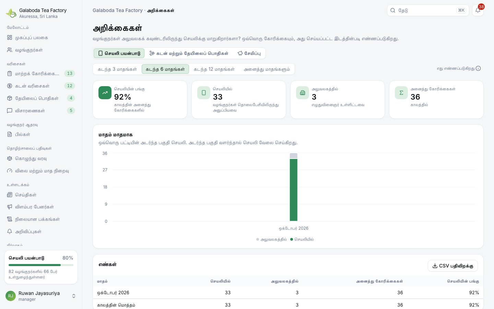
படம் 18.1 அறிக்கைகள் → செயலி பயன்பாடு: அந்தக் காலத்தில் 92% கோரிக்கைகள் செயலியிலிருந்து வந்தன.
கடன் மற்றும் தேயிலைப் பொதிகள்: அங்கீகரிக்கப்பட்ட முன்பணம், கடன் மற்றும் உரம், வழங்கப்பட்ட தேயிலைப் பொதிகள், மறுக்கப்பட்ட கோரிக்கைகள், மாதம் மாதமாக.
சேமிப்பு: தொழிற்சாலை வழங்குநர்களுக்காக எவ்வளவு வைத்திருக்கிறது, எத்தனை பேருக்கு, ஒவ்வொரு மாதமும் செலுத்தியதும் எடுத்ததும்.
ஒவ்வொரு அட்டவணையின் கீழும் CSV பதிவிறக்கு.
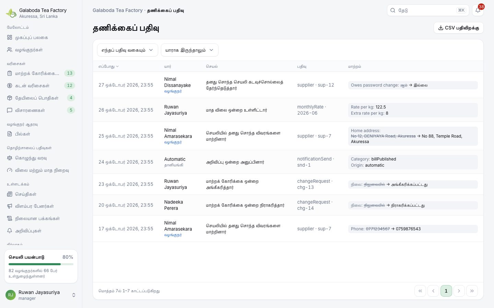
படம் 18.4 தணிக்கைப் பதிவு: யார் என்ன செய்தார், எப்போது, என்ன மாறியது.
தணிக்கைப் பதிவைத் திருத்த முடியாது. பதிவு வகை அல்லது நபரால் வடிகட்டி, அதை CSV ஆகப் பதிவிறக்கலாம். தரவு நிலை (மேலே உள்ள ஒத்திசைவுக் குறியிலிருந்து, ஒத்திசைவு இயக்கத்தில் இருக்கும்போது) ஒரு எண்ணை வழங்குநருக்குக் கூறும் முன், எண்கள் எவ்வளவு புதியவை என்பதைக் காட்டும்.
19. கன்சோல் மறுக்கும்போது
செய்தி (சுருக்கமாக)
செய்ய வேண்டியது
இதை நீங்கள் பதிவுசெய்தீர்கள், வேறு ஒருவர் தீர்மானிக்க வேண்டும்
வேறொரு மேலாளரிடம் கேளுங்கள்
வரம்பைத் தாண்டியது
குறிப்புடன் நிராகரியுங்கள், அல்லது வரம்புக்குள் சிறிய தொகையை அங்கீகரியுங்கள்
ஒரு கடன் இன்னும் செலுத்தப்பட வேண்டும்
அது முடியும் வரை புதிய கடனோ முன்பணமோ இல்லை
கோரிக்கை ஏற்கனவே முடிவுக்காகக் காத்திருக்கிறது
முதல் கோரிக்கையைத் தீர்மானியுங்கள்
குறிப்பு ஒன்று அவசியம்
ஒவ்வொரு நிராகரிப்புக்கும், இரத்துக்கும், நிறுத்தத்துக்கும் ஒரு காரணம் தேவை
உங்கள் பதவி இதை அனுமதிக்கவில்லை.
அந்தப் பக்கம் வேறொரு பதவிக்கு உரியது; நிர்வாகியிடம் கேளுங்கள்
மாதம் பூட்டப்பட்டுள்ளது
அது வெளியிடப்பட்டுவிட்டது; திருத்தங்கள் அடுத்த மாதப் பில்லில் சேரும்
முந்தைய மாதம் வெளியிடப்படவில்லை
மாதங்களை வரிசைப்படி வெளியிடுங்கள்
அங்கீகாரம் சீட்டில் இல்லை
அதைத் தொழிற்சாலை அமைப்பில் உள்ளிட்டு, ஏற்றுமதி செய்து, கோப்பை மீண்டும் இறக்குமதி செய்யுங்கள்
வேலை நடக்கிறது, மீண்டும் முயற்சிக்கவும்
அந்த நேரத்தில் ஒரு மாதம் வெளியிடப்பட்டுக் கொண்டிருந்தது; எதுவும் சேமிக்கப்படவில்லை, மீண்டும் அனுப்புங்கள்